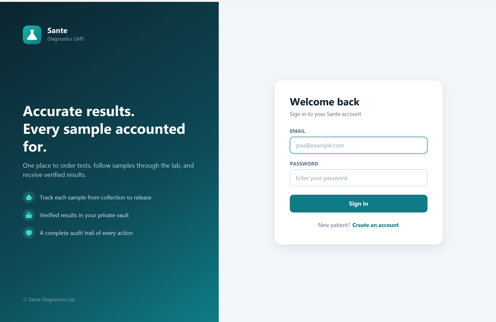
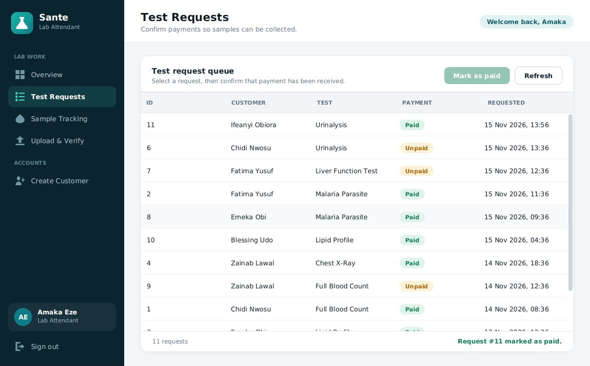

Featured project
Sante Lab System
A desktop app that follows a lab test from the patient’s order to a verified result.
View source codeAbout this project
Sante Lab System (Sante LIMS) is a desktop app for a diagnostics lab. It has three kinds of users: patients, lab attendants and admins. Patients order tests, pay by bank transfer and download their results from a private vault. Attendants confirm payments, move each sample through the lab, upload results and release them. Admins manage users and the test catalogue and can see a full audit trail.
The problem
In a lab, a lot can go wrong between a patient ordering a test and getting a result: payments get lost, samples are hard to track, results reach the wrong person, and nobody can say who changed what. I wanted one place where a patient can order and follow a test, the lab can track every sample, a result is checked before it goes out, and every action is recorded.
Features
- Three roles (patient, lab attendant, admin), each with its own dashboard
- Patients can create their own account or have one made for them
- Temporary passwords that must be changed on first sign-in
- Online test ordering with bank-transfer payment details
- Attendants confirm payments, then track each sample through the lab
- Result upload, then review and approval before release
- A private result vault where patients download their results
- Admin tools to manage users and the test catalogue
- An audit trail of every action that can’t be edited or deleted
Screenshots



Technologies used
What I learned
This was my biggest project so far. I learned to organise a larger app into models, DAOs, services and controllers so each part has one job. I learned how to connect Java to a PostgreSQL database with JDBC, how to store passwords safely by hashing them with BCrypt instead of saving them as plain text, and how to design different screens and permissions for different roles. Building the audit trail taught me to think about accountability, not just features. If I did it again, I would keep the database password out of the source code from day one.